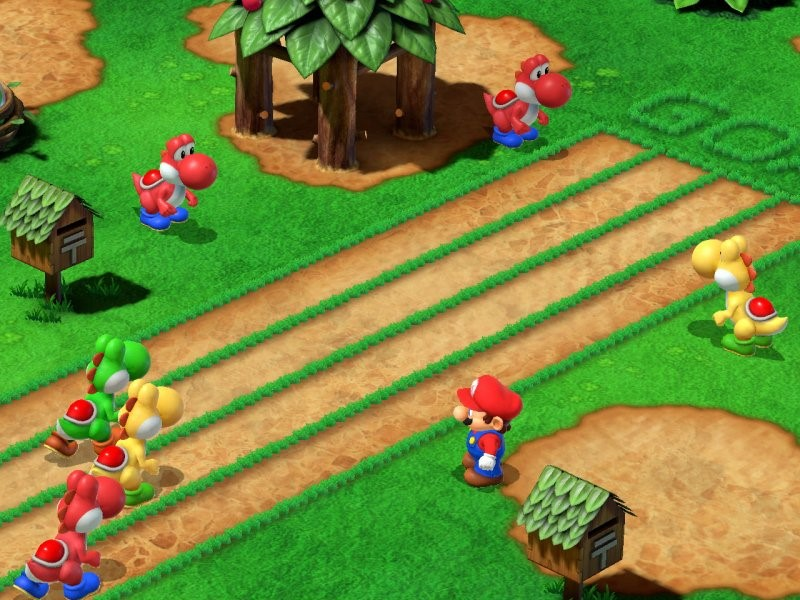
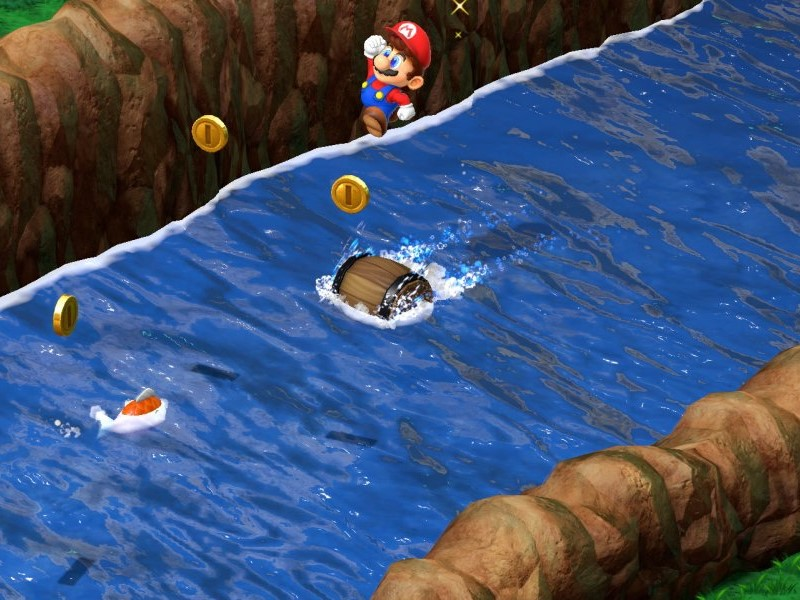

EL PRIMER JUEGO DE ROL DE MARIO LLEGA A NINTENDO SWITCH CON UN BUEN LAVADO DE CARA
Reúne a un grupo de héroes fuera de lo común y embárcate en una cautivadora aventura para reparar la Vía Estelar, en la que se pueden conceder deseos. Llega Super Mario RPG a Nintendo Switch, ¡y ahora está disponible en castellano! Detén a la siniestra Banda de Fraguo y conoce a un elenco de variopintos personajes; el misterioso muñeco Geno y el bondadoso Mallow son algunos de ellos.
¡HA OCURRIDO UNA CATÁSTROFE!
Como de costumbre, Bowser ha vuelto a las andadas y ha secuestrado a la princesa Peach. ¡Así que allá que va de nuevo Mario al rescate! Sin embargo, cuando Mario le planta cara en el Castillo de Bowser, aparece un enemigo mucho más imponente: Exor, la espada gigante. Se estrella contra el castillo y hace pedazos la Vía Estelar, lo que causa un temblor de tierra de tales proporciones que lanza a todos por los aires. Mario tiene ahora que encontrar a la princesa Peach, forjar nuevas alianzas y desbaratar los malvados planes de Exor y la Banda de Fraguo antes de que sea demasiado tarde.
Super mario RPG llega este 17 de noviembre a la Nintendo Switch